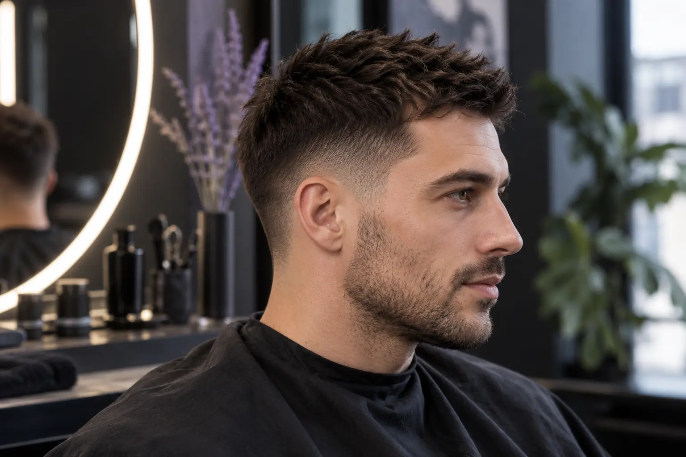

Trumpas kirpimas: mašinėlės ilgis, kontūras ir perėjimas
Autorius: Madbeauty redakcija · Numatyta 2026 m. spalio 28 d. 16:00 (Lietuvos laiku)
Kaip atskirai aprašyti viršaus ir šonų ilgį, perėjimo vietą, kontūrą ir tiksliai išsiaiškinti paslaugos apimtį.

Trumpam kirpimui nėra vieno visiems tinkamo mašinėlės ilgio. Aiškiau susitarti, jei užduotį išskaidote į keturias dalis: viršų, šonus, perėjimo aukštį ir kontūrą. Antgalio numerį ar milimetrus nurodykite tik tada, kai jų reikšmė patikrinta su konkrečia kirpimo mašinėle ir kirpėju.
Ilgio orientyrai
Pirmiausia apibūdinkite, kiek plauko norite palikti viršuje ir šonuose. Jei remiatės antgalio numeriu, kartu išsiaiškinkite, kokį ilgį jis reiškia naudojamoje sistemoje. Vien skaičius gali nepasakyti, kaip atrodys kirpimas, todėl pridėkite norimo rezultato aprašymą arba pavyzdinę nuotrauką.
Perėjimo aukštis
Perėjimas nusako, kur trumpesni šonai palaipsniui susijungia su ilgesne viršutine dalimi. Vietoj vien „trumpo perėjimo“ pasakykite, kur norite, kad jis prasidėtų: žemiau, maždaug ties šonų viduriu ar aukščiau. Šie žodžiai padeda susitarti dėl vietos, bet nenustato vienodo techninio rezultato kiekvienam kirpėjui.
Nuotraukoje parodykite, kuri perėjimo vieta jums patinka. Jei vaizde svarbus ir kitas dalykas, pavyzdžiui, labai trumpi šonai ar ilgesnis viršus, įvardykite jį atskirai, kad nuotrauka nebūtų suprasta kaip reikalavimas nukopijuoti visą kirpimą.
Kontūras ir užbaigimas
Kontūrą aptarkite atskirai nuo bendro ilgio: paminėkite smilkinius, sritį aplink ausis ir sprandą. Pasakykite, ar norite aiškesnės linijos, ar švelnesnio užbaigimo. Taip pat iš anksto išsiaiškinkite, ar į pasirinktą paslaugą įeina plovimas, sušukavimas ar kiti darbai. Vieno teikėjo meniu šiuos pasirinkimus rodo atskirai, tačiau tai nėra visų salonų vienoda paslaugos sudėtis: vieno teikėjo plaukų paslaugų meniu.
Vyrų kirpimas: metodas ir paslaugos apimtis
„Vyrų kirpimas“ yra paslaugos pasirinkimo kategorija, o ne vienas konkretus kirpimo būdas. Teikėjų meniu gali atskirai nurodyti mašinėle ar žirklėmis atliekamus variantus, plovimą ir sušukavimą. Todėl palyginkite ne vien pavadinimus, bet ir tai, kokie darbai įtraukti į pasirinktą paslaugą.
Trumpa užduotis prieš vizitą
Prieš susitardami, užpildykite šį trumpą zonų žemėlapį. Jis padeda apibūdinti norimą rezultatą, bet nėra kirpimo technikos instrukcija.
- Viršus: kokio ilgio ir formos norite?
- Šonai: kiek trumpesni jie turėtų būti už viršų?
- Perėjimas: kur norite, kad jis prasidėtų?
- Kontūras: kaip turėtų būti užbaigti smilkiniai, sritis aplink ausis ir sprandas?
- Antgalis: jei nurodote numerį ar milimetrus, ar kirpėjas patvirtino jo reikšmę naudojamoje įrangoje?
- Paslaugos apimtis: ar įeina plovimas, sušukavimas ir kiti jums svarbūs darbai?
Pavyzdžiui, jei norite trumpesnių šonų, ilgesnio viršaus ir švelnaus perėjimo, taip ir užrašykite. Pridėkite nuotrauką tik kaip nuorodą į pageidaujamą formą, o tikslų ilgį ir įtrauktus darbus suderinkite atskirai. Tai iliustracinė situacija, ne tikro kliento kirpimo pavyzdys.
Nacionalinį pasirinkimą galite peržiūrėti kategorijoje Vyrų kirpimas ir tada aiškiai pasirinkti miestą. Kategorija pati savaime nepatvirtina, kad jame yra teikėjas ar laisvas laikas.
Planuojamos vidinės nuorodos
Šaltiniai peržiūrai
- Žirmūnų 22 · plaukų paslaugų meniu — Perskaitytas šio teikėjo meniu: galiukų kirpimas, kirpimas su galvos plovimu, kirpimas su sušukavimu, atskiri mašinėlės ir žirklių variantai. Tik vieno salonų meniu pavyzdys, ne mūsų pasiūla, nacionalinės kainos ar universalūs laikai; konkrečių kainų į tekstą neperkelti.
- Cut and clipper hair using hairdressing techniques — Read pp1–7 consultation, natural perimeter/growth pattern/curl classification, shape and separate preparation advice. Professional standard supports terminology and consultation relevance only; no clinical eligibility or DIY cutting instructions; not Lithuanian licensing advice.